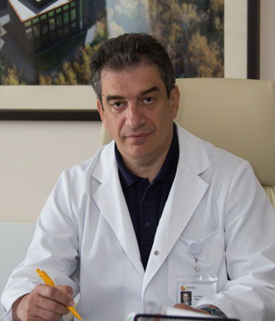

Евгений александрович Сидоренко
Врач-нейрохирург высшей категории, вертебролог, член ассоциации спинальных хирургов Европы.
Высшая квалификационная категория по специальности нейрохирургия с 1999 года.
Общий медицинский стаж работы 45 лет. Стаж работы врачом - нейрохирургом 33 года.
